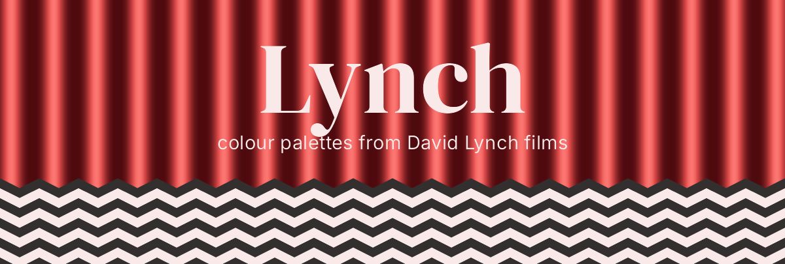
Colour palettes from the films of David Lynch, for when a bar chart needs a little dread.
Every film gets five colours. Most also get a colour-blind-safe cut, a sequential ramp for numbers, and sometimes a diverging one. It’s a fun package first, but the scales plug straight into ggplot2, and every palette has been through a colour-blindness simulator.
Installation
# install.packages("pak")
pak::pak("gkaramanis/Lynch")Quick start
library(Lynch)
lynch_palette("twin_peaks")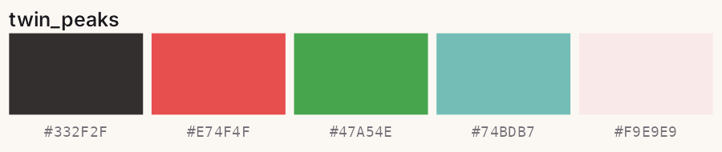
lynch_palette("blue_velvet", 3)Ramps stretch to as many colours as you like:
lynch_palette("dune", 12, type = "sequential")
lynch_palette("mulholland_drive", type = "diverging")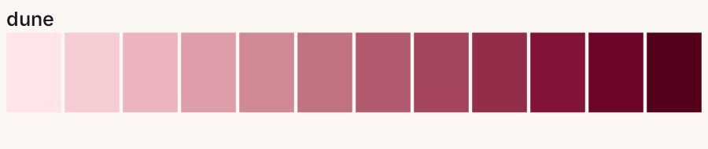
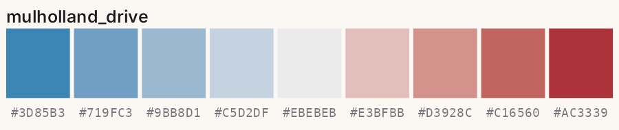
With ggplot2
library(ggplot2)
ggplot(mpg, aes(displ, hwy, colour = drv)) +
geom_point() +
scale_colour_lynch_d("twin_peaks_safe")
ggplot(faithfuld, aes(waiting, eruptions, fill = density)) +
geom_raster() +
scale_fill_lynch_c("mulholland_drive", direction = -1)
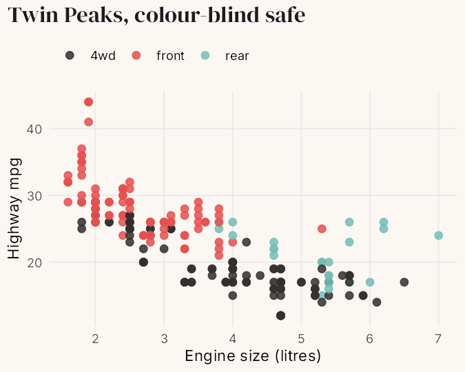
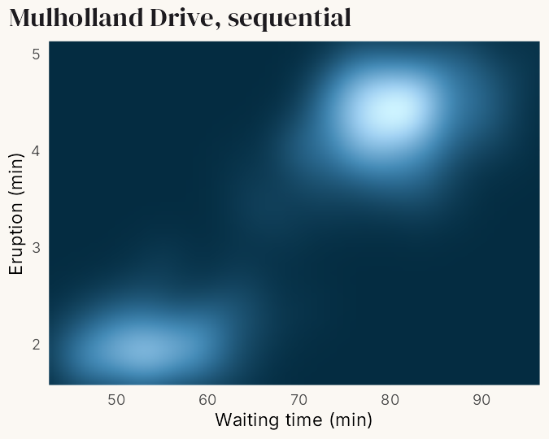
_d scales are for categories and _c scales for numbers. For a diverging scale, add type = "diverging" and a midpoint.
The palettes
Most palettes were sampled from stills collected in this Pinterest pin. Each film’s title below links to its Wikipedia article, where you can hold the poster up against the colours.
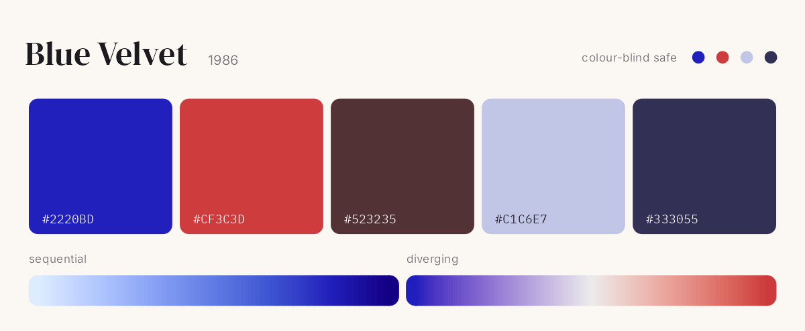
Blue Velvet ·"blue_velvet"
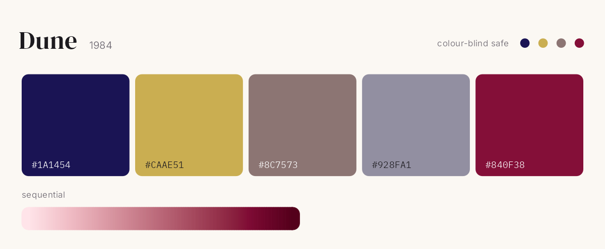
Dune ·"dune"
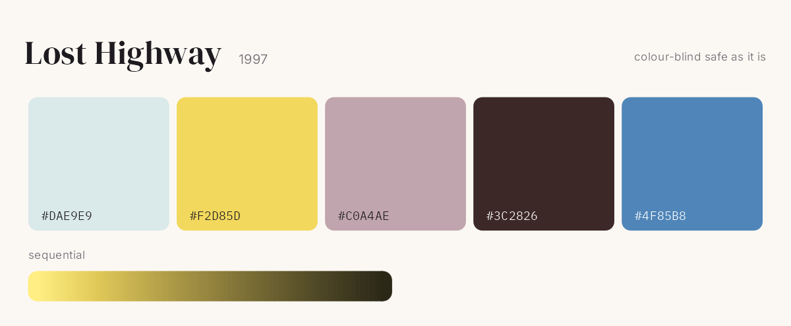
Lost Highway ·"lost_highway"
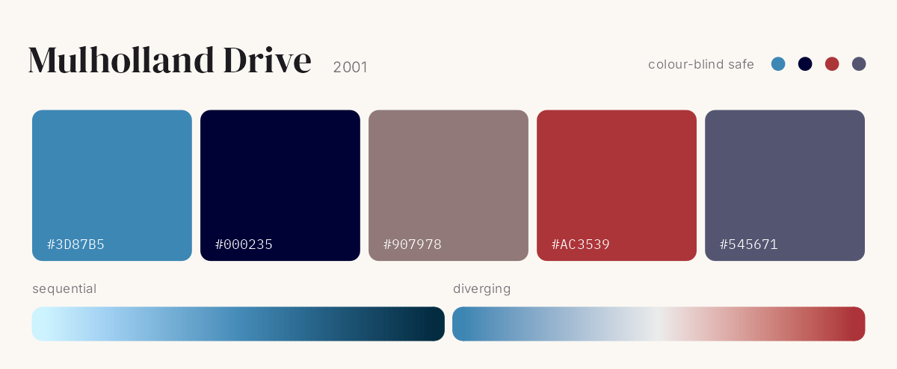
Mulholland Drive ·"mulholland_drive"
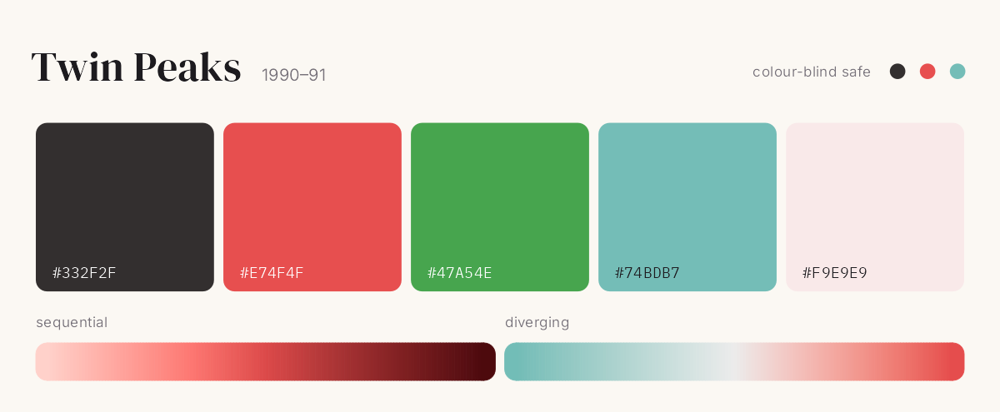
Twin Peaks ·"twin_peaks"
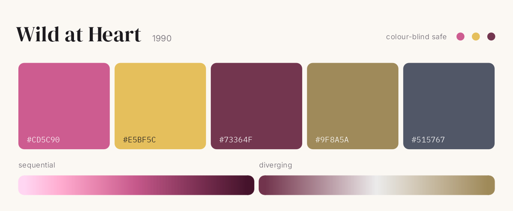
Wild at Heart ·"wild_at_heart"
Colour blindness
Only Lost Highway keeps all five colours apart for people with red-green colour blindness. The other films have a _safe version that keeps the three or four colours that do, shown as dots on each card. lynch_accessibility has the numbers.
lynch_palette("twin_peaks_safe")
lynch_accessibilityMore
The Get started vignette walks through every palette type and scale. The figures on this page are built by data-raw/readme-figures.R.
“Black as midnight on a moonless night.”